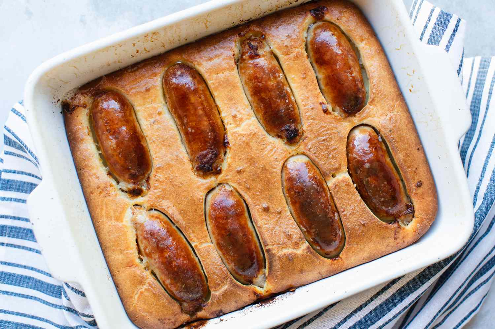

Toad In The Hole

What is Toad In The Hole?
Toad In The Hole or sausage toad is a traditional English dish consisting of sausages in Yorkshire pudding batter, usually served with onion gravy and vegetables.
Historically, the dish has also been prepared using other meats, such as rump steak and lamb's kidney.
Ingredients
- 12 chipolatas
- 1 tbsp sunflower oil
- 140g plain flour
- 2 eggs
- 175ml semi-skimmed milk
Steps
- Heat the oven to 220C/200C fan/gas 7. Put the chipolatas in a 20 x 30cm roasting tin with the oil and bake for 15 mins until browned.
- Meanwhile, make the batter. Tip the flour into a bowl with ½ tsp salt, make a well in the middle and crack the eggs into it.
- Use an electric whisk to mix it together, then slowly add the milk, whisking all the time. Leave to stand until the sausages are nice and brown.